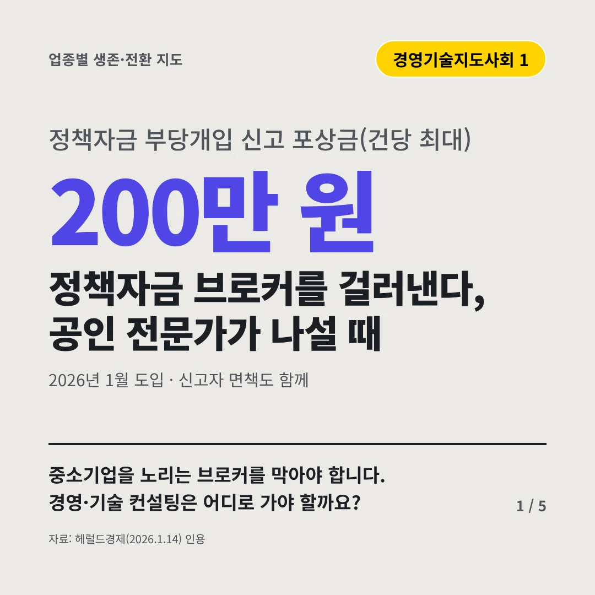
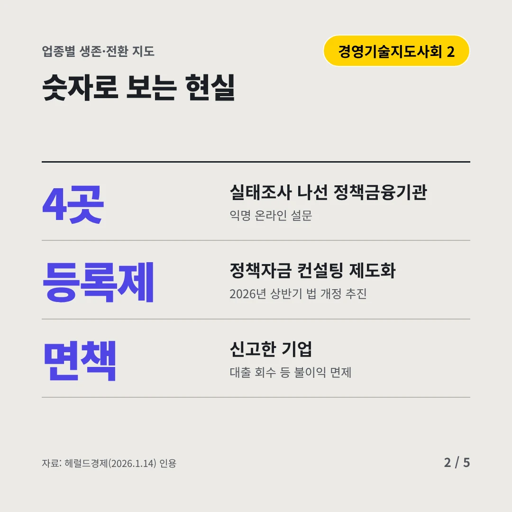
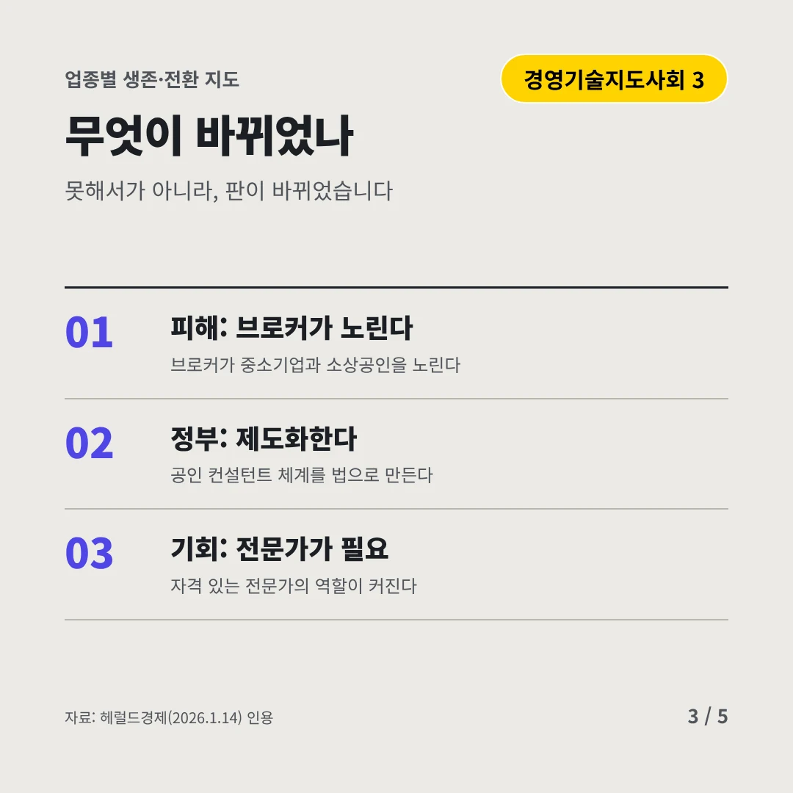
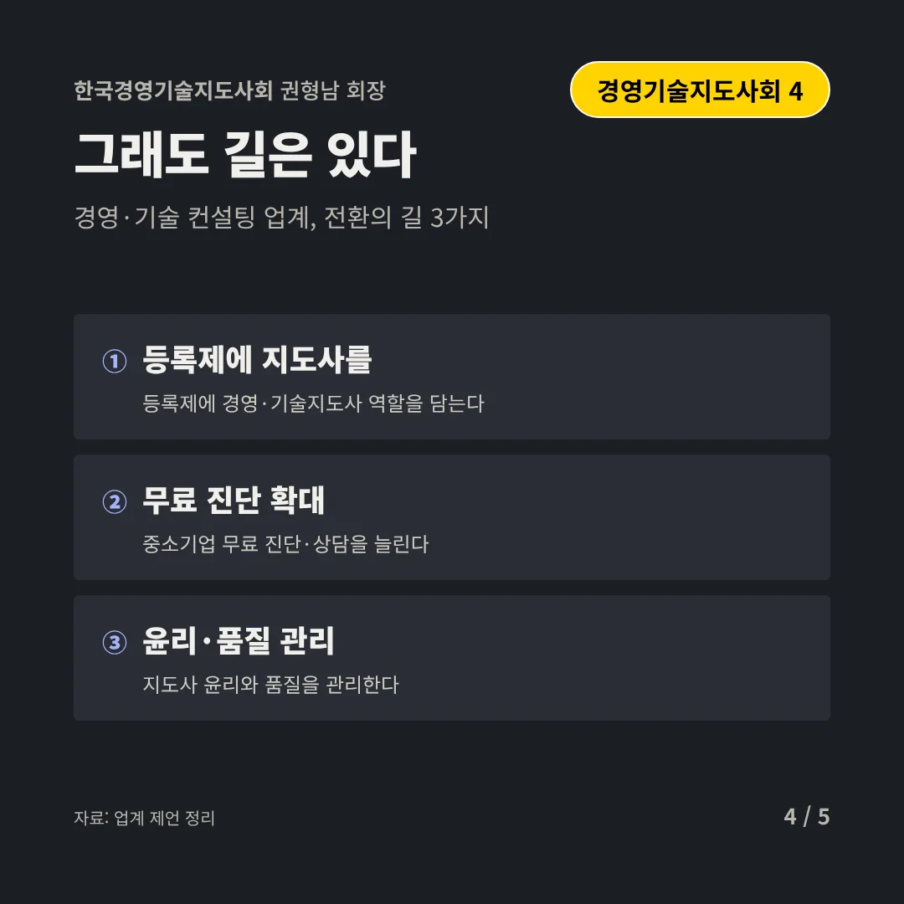
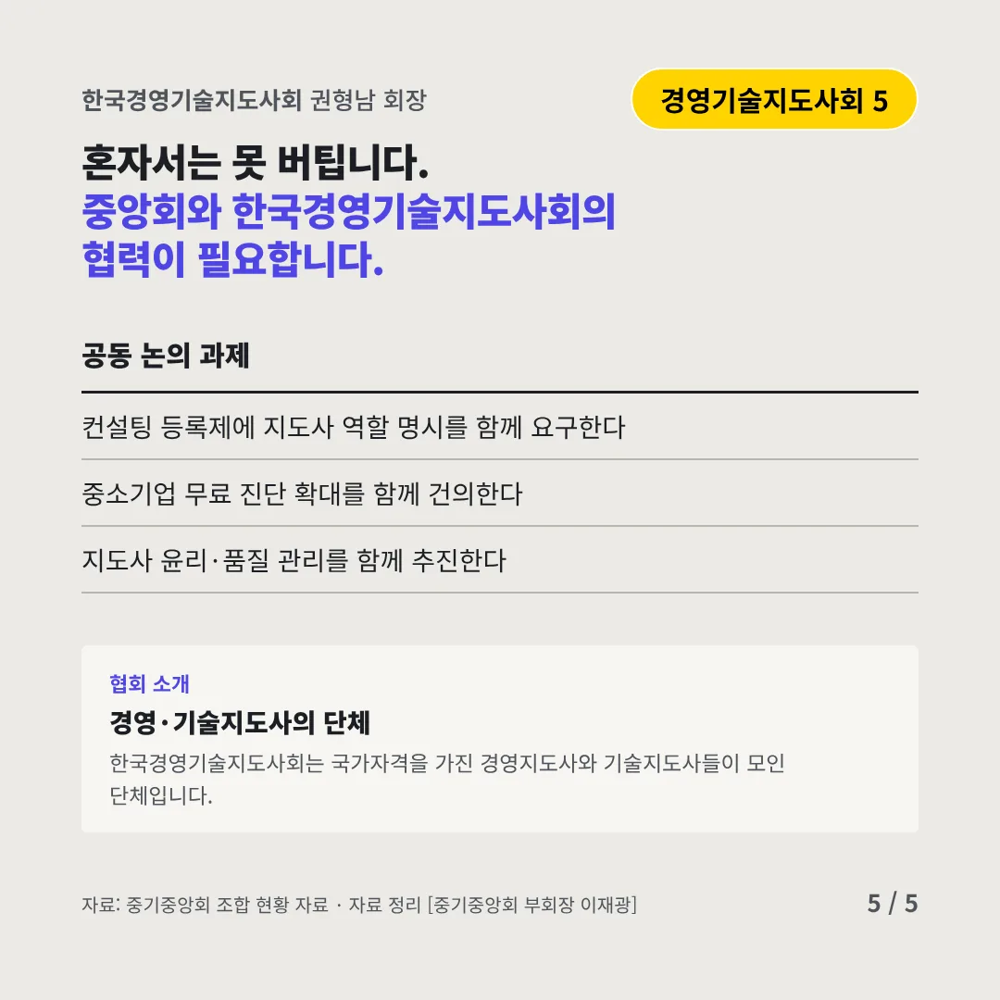
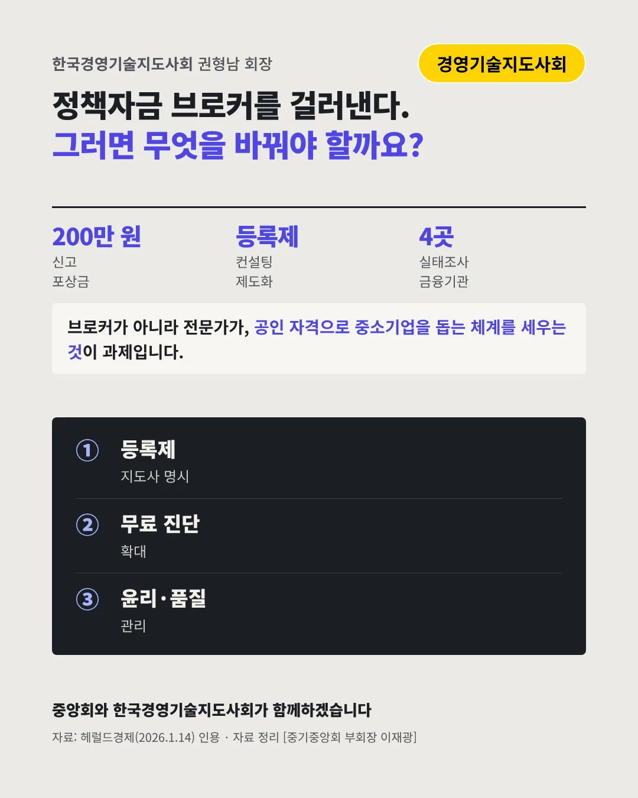

한국경영기술지도사회
정책자금 브로커를 걸러낸다, 공인 전문가가 나설 때
200만 원 정책자금 부당개입 신고 포상금(건당 최대)






중소기업을 노리는 브로커를 막아야 합니다. 경영·기술 컨설팅은 어디로 가야 할까요?
숫자로 보는 현실
- 4곳실태조사 나선 정책금융기관익명 온라인 설문
- 등록제정책자금 컨설팅 제도화2026년 상반기 법 개정 추진
- 면책신고한 기업대출 회수 등 불이익 면제
무엇이 바뀌었나
- 피해: 브로커가 노린다브로커가 중소기업과 소상공인을 노린다
- 정부: 제도화한다공인 컨설턴트 체계를 법으로 만든다
- 기회: 전문가가 필요자격 있는 전문가의 역할이 커진다
그래도 길은 있다
- 등록제에 지도사를등록제에 경영·기술지도사 역할을 담는다
- 무료 진단 확대중소기업 무료 진단·상담을 늘린다
- 윤리·품질 관리지도사 윤리와 품질을 관리한다
한 장 요약

협회 소개
한국경영기술지도사회는 국가자격을 가진 경영지도사와 기술지도사들이 모인 단체입니다.
자료: 헤럴드경제(2026.1.14)